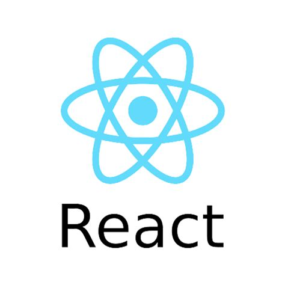

La historia de JavaScript, el único lenguaje que entienden los navegadores
JavaScript es uno de los lenguajes más usados del mundo, pero también fue uno de los más odiados por muchos programadores.
JavaScript, durante la década del 2010 al 2020, fue el número uno y se apoderó de casi toda la industrias del desarrollo de software. Todo se hacía con JavaScript. Pero este lenguaje, que llegó a dominar el mundo y es el mayor lenguaje en el desarrollo Front-End, fue creado en apenas una semana y puso en guerra a dos empresas enormes. Gracias a JavaScript se crearon Firefox y Google Chrome. Aun así, JavaScript fue uno de los lenguajes más vilipendiados, insultados y odiados por los programadores por años (más que PHP). Incluso, durante casi diez años, su desarrollo estuvo completamente abandonado.
¿Cómo fue el inicio de JavaScript?
En 1994 aparece Netscape, el primer navegador masivo de la historia. Antes de Netscape, había un navegador llamado Mosaic, pero que fue un navegador sólo para la élite tecnológica. A partir de ese navegador, se creó Netscape, que llevó la web a todo el mundo.
Netscape empieza a cotizar en la bolsa sin ingresos ni modelo de negocios, pero como era la siguiente revolución de la tecnología (después de la computadora personal), ganó muchísimo dinero. Entonces, Bill Gates desarrolló su propio navegador web llamado Internet Explorer, que va a competir contra Netscape y empieza la guerra de los navegadores. Una guerra muy dura, entre Microsoft, que tenía recursos prácticamente ilimitados, (Bill Gates era el hombre más rico del mundo) y Netscape, una empresa nueva, con dinero, pero que no tenía el poder para enfrentarse a un gigante como Microsoft. Entonces, Internet Explorer empieza a atacar con toda su fuerza.
Para 1995, Netscape se da cuenta de que las páginas web son bastante básicas, que son solamente para consumir, como una revista pero en una pantalla. No había interacción. El usuario era pasivo. Entonces decidieron crear un lenguaje de programación que funcionara en el navegador. Un lenguaje básico de scripting. Es decir, un lenguaje de comandos específicos para hacer algunas cosas básicas. Para crear ese lenguaje, contratan a Brendan Eich, quien crea JavaScript en apenas una semana porque estaban en plena guerra de los navegadores. El lenguaje no era perfecto, y eso arrastró la mala fama de JavaScript durante varios años. En ese tiempo no se llamaba JavaScript, sino LiveScript, porque eran scripts vivos en el navegador. Pero en esos años el lenguaje Java (el de la tacita de café) era famosísimo. Por lo tanto, se aprovecharon de ese nombre para ganar marketing. Por eso, de LiveScript pasó a llamarse JavaScript. JavaScript y Java no tienen nada que ver, son lenguajes completamente diferentes.
Microsoft decide crear su propio lenguaje de programación, JScript, que era su versión de JavaScript. Por un lado, teníamos a JavaScript, y por el otro, a JScript, pero no eran 100% compatibles. Entonces, Netscape considera que necesitaban un estándar, porque si no, cada navegador hará sus versiones y sería un desastre. Ya se había creado el estándar para HTML y ahí también se incluyó el estándar de CSS, pero no había un estándar para JavaScript, porque no es un lenguaje que se haya creado dentro de la especificación de la web. JavaScript se creó después por esta guerra de navegadores y por mejorar las páginas. Netscape envía el código de JavaScript (su especificación) a Ecma International, que es una organización internacional basada en membresías de estándares para la comunicación y la información. Adquirió el nombre Ecma International en 1994, cuando la ECMA (European Computer Manufacturers Association) cambió su nombre para expresar su alcance internacional. Ecma se encarga de estandarizar JavaScript, mediante ECMAScript, para que todos los navegadores usen la misma versión y pueda ejecutarse correctamente. Para el año 1997, Ecma lanzó la primera versión de su estándar, llamado ECMAScript 1. Los estándares son algo así como la Real Academia Española. Ellos ponen las reglas, pero la gente ve si les hace caso o no. Por eso, cuando lanzaron este estándar, a Microsoft no le importó y siguieron haciendo su JScript como ellos querían. En 1998, sale la segunda versión de ECMAScript, en el año 1999 la versión 3 de ECMAScript y la versión 4 nunca salió. Hubo rencillas internas entre los grupos que trabajaban en la especificación, nunca llegaron a ponerse de acuerdo y de 1999 hasta el año 2009 (10 años), JavaScript no tuvo una nueva especificación. Abandonado por una década. En esos tiempos se pensaba en JavaScript como un lenguaje tonto, un lenguaje para poner animaciones o cositas volando por la pantalla y nada realmente serio. JavaScript es un lenguaje que solo vive en el navegador, no puede instalarse en un servidor, conectarse a base de datos u otras cosas que hacen los lenguajes de programación “serios”. Entonces, JavaScript era el patito feo de la programación. Pero, a pesar de ser el patito feo, era el lenguaje que todo programador web tenía que usar le gustara o no, porque era el único lenguaje en el navegador.
El renacimiento de JavaScript
En el año 2002 aparece un libro que marca un antes y después en el mundo de JavaScript, llamado JavaScript: The Good Parts, de Douglas Crockford. Este libro dice que JavaScript no es un mal lenguaje, sino que los programadores lo usan mal. Dice que JavaScript es excelente y muestra las cosas que se pueden hacer con él.
El mismo Douglas Crockford, que trabajaba para ese entonces en Yahoo, creó la especificación de JSON (JavaScript Object Notation), que es una forma de enviar información entre aplicaciones. Una forma muy sencilla, fácil de leer por los humanos, muy liviana para las computadoras y que era un reemplazo a XML. Poco a poco, JavaScript empezaba a recuperar el prestigio.
En 2002 también se lanza Firefox, un navegador que competía contra Internet Explorer en una segunda guerra de los navegadores. En la primera guerra la perdedora fue Netscape, pero en el año 1998, antes de desaparecer, abre su código y con eso se crea el concepto de Open Source.
En esa época, Internet Explorer llegó a tener más del 95% del mercado de Internet. Incluso, la gente creía que la “e” de Explorer era realmente Internet. Las personas no sabían diferenciar entre Internet como el concepto, y un programa específico, que era Internet Explorer.
Microsoft tuvo un juicio de monopolio porque Explorer estaba instalado en Windows y no podías desinstalarlo, ni podías cambiar de navegador predeterminado. Habían jugado bastante sucio. Pero en el año 2002 nace Firefox a partir del código que había dejado Netscape. Firefox respetaba los estándares de ECMAScript que Microsoft no quería respetar. En esa época, Firefox se convirtió en una especie de grito de libertad de todos los programadores. Las personas aficionadas a la tecnología amaban Firefox y se lo recomendaban a todo el mundo. En Firefox tenías pestañas, buscador integrado, extensiones, PNG, entre otras cosas, dónde Internet Explorer fallaba. Pero aun así, el rey seguía siendo Internet Explorer. Así que, si tú programabas para la web, no tenías más remedio que hacer un código JavaScript para Internet Explorer, y un código JavaScript para Firefox.
jQuery
Esta pesadilla de escribir doble código se acaba en el año 2006, cuando aparece jQuery, que se convirtió en el amo y señor absoluto de la web por una década.
jQuery permitía escribir código JavaScript limpio, muy bonito, con una sintaxis supersencilla. Era fácil escribir código con jQuery. Además, hacía todo el trabajo sucio por debajo. Traducía tu código, a código compatible con Internet Explorar y Firefox. Para esos años la web no paraba de crecer. Los navegadores eran cada vez más potentes y tenían capacidad para procesar más tareas, con lo cual, se le empiezan a delegar más tareas a JavaScript. La explosión de jQuery permitía que algunas tareas, que se mandaban al servidor, ahora se les encargaran al navegador. Y como los navegadores eran más potentes, cada vez se desarrollaba más el concepto de aplicaciones web. Ya no sitios web, sino aplicaciones completas, con toda su lógica y negocio, pero funcionando en un navegador. Eso depende, en gran medida, del poder que adquieren los navegadores, no solamente el lenguaje JavaScript.
Google Chrome
En el año 2008, Google lanza su navegador Google Chrome.
A diferencia de Microsoft, Google es una empresa basada completamente en la web. Todos sus negocios está en web, mientras que Microsoft comenzó su negocio como una empresa de software para computadoras de escritorio. Google era consciente de que si querían una web donde ellos pudieran poner las reglas del juego, donde ellos pudieran innovar y crear productos, entonces necesitaban su propio navegador. Necesitaban navegador que le diera muchísima velocidad a JavaScript. En el navegador, existe algo llamado motor de JavaScript. Es el que traduce el código JavaScript para que el navegador pueda ejecutar las órdenes de ese código. La principal ventaja de Google Chrome frente a Firefox e Internet Explorer era su velocidad. Google Chrome era enormemente veloz como un auto de carreras y Firefox se empezaba a sentir como un camión. Internet Explorer empezaba a sentirse como una carroza oxidada, vieja y que chirriaba al andar. Google Chrome creció muchísimo, muy rápido, y en gran parte, debido a su motor de JavaScript: v8. Este motor alcanzó a ser hasta 8 veces más veloz que el motor de JavaScript, de Firefox. Era algo muy difícil de superar y muy pronto, Google Chrome se convirtió en el nuevo rey de Internet.

Microsoft reemplazó a Internet Explorer con otro navegador llamado Edge, que si respeta los estándares. Pero el primer Edge en realidad era el mismo Internet Explorer con algunos cambios. Luego salió la versión Edge Chromium, que creció muchísimo, quitándole mercado a Google Chrome.
Node.js
Lo especial de Google Chrome era su motor v8, porque con eso se podían correr aplicaciones web más rápido y Google ya estaba trabajando en aplicaciones web. Es decir, aplicaciones que corren en el navegador, como Google Maps, Gmail, Google Docs, la versión de office para Google, entre otros. En 2009 comienza la real revolución de la web, que no hubiera sido posible sin Google Chrome, y es que el programador estadounidense Ryan Dahl lanza Node.js. Dahl llevó el motor v8 de Chrome del navegador al servidor en un entorno de ejecución llamado Node.js. Con esto, ahora se podía escribir código JavaScript, que era interpretado, en el servidor, como PHP, Java, Python, Ruby o C#.

Hay que evitar una confusión muy común: Node.js no es un framework, es un entorno de ejecución, que son cosas totalmente diferentes. Con Node.js tenemos JavaScript en el servidor, en el navegador y podemos crear aplicaciones universales, que tienen JavaScript en todo el stack.
La revolución de la Web
En 2010 Google lanza Angular.js y ahora si empieza la fiebre de JavaScript en el mundo. Aparece el famoso stack MEAN: MongoDB para la base de datos; Express como framework de Node.js, Angular.js como framework en el frontend y Node.js como entorno de ejecución en el backend. Ese stack MEAN marcó varios años en el desarrollo web y todo el mundo quería aprender MEAN.
Pero eso duró unos pocos años porque luego Google dio marcha atrás y creó Angular 2 o solo Angular, que usaba TypeScript y, en general, era bastante diferente Angular.js. A mucha gente le encantaba el Angular.js, así que un programador Evan You, que salió del equipo de Angular.js y que también estaba incómodo de que Angular.js desapareciera para convertirse en otra cosa, en 2014 creó su propio framework. Sacó las mejores prácticas de Angular.js y las mejores prácticas de React, y lo llamó Vue.js.
Vue es uno de los frameworks más queridos por toda la comunidad y es progresivo. Va creciendo junto con cada proyecto. Se puede empezar con Vue utilizando un cdn, así como se hacía con jQuery, solamente con una línea en el header y ya se esta usando Vue. Mientras el proyecto crezca se puede ir añadiéndole componentes. Eso lo hace fantástico. Una de las principales ventajas de Vue.js es la rapidez con la que se puede comenzar. Vue, a diferencia de React o Angular, no es mantenido por una gran empresa, sino por toda la comunidad.
React llegó para cambiar la Web
En 2013, un año antes de que aparezca Vue.js, aparece React, una propuesta de Facebook para el desarrollo frontend. Facebook empezó como aplicación web, después se volvió aplicación móvil, y como creció muchísimo, se enfrentó a grandes retos que el desarrollo tradicional no tenía como solventar. 
A diferencia de Angular.js, que era un proyecto interno dentro de Google y que no se usaba en los proyectos importantes de la empresa, React no fue un proyecto secundario para mantener algunos proyectos extras. Fue creado exclusivamente para mejorar el rendimiento de Facebook. La interfaz se bloqueaba por la cantidad de gente que entraba y necesitaban una nueva manera de manejarla. Así crearon React, con la filosofía de crear componentes reutilizables, crear un virtual DOM, que era el DOM en memoria para no sobrecargar el navegador y un nuevo lenguaje, llamado JSX, que permite escribir JavaScript como si se estuviera escribiendo HTML. A la gente le encantó y empezó, poco a poco, a desaparecer el concepto de jQuery. La estocada final para jQuery fue en 2015, cuando sale ECMAScript 6, después de seis años de ECMAScript 5, de 2009. A partir de entonces, todo cambió para bien. Después de haber tenido sequías de 10 años, y de 6 años, en donde no había actualizaciones para JavaScript, comenzó a actualizarse año tras año. Por eso, también a esa versión se le conoce como CMAScript 2015, porque a partir de entonces, empezaron a actualizarse todos los años. Fue el mejor momento para ser programador JavaScript. Tenemos tres frameworks: React, Angular y Vue, de los cuales React es el que ha ganado más ventaja. La mayor cantidad de ofertas laborales es de React, pero eso no le quita para nada fuerza y prestigio a los otros dos. Hay un cuarto framework llamado Svelte, que tiene una filosofía de entregar JavaScript limpio en el frontend y a la gente también le gustó mucho, pero su cuota de mercado es un poquito menor.
La llegada de TypeScript
En 2012 aparece TypeScript, una versión de JavaScript desarrollada por Microsoft. TypeScript añadía nuevas funciones muy importantes, como el tipado o la orientación de objetos. Eso hizo que TypeScript se mantenga fuerte año tras año y hoy sea un lenguaje muy importante que todo programador JavaScript debe tener en cuenta. Y por eso, la versión 2 de Angular vino directamente con TypeScript, ya no con JavaScript puro. Sin embargo, JavaScript es compatible con TypeScript, así que dar el salto tampoco es tan complicado. Además, también se puede desarrollar en React con TypeScript.
Para esos años, JavaScript aparecía como el número uno en todos los rankings como el lenguaje más usado del mundo. Pero, también llegaba la fatiga JavaScript porque estaba en todos lados: en la web, en aplicaciones de escritorio (con Electron), en aplicaciones móviles (con Ionic), en IoT, en Machine Learning, en Realidad Virtual y Aumentada, etc. No está mal, todo lenguaje puede tener muchas áreas, pero se quería hacer de todo, y JavaScript tampoco es el lenguaje ideal para hacer de todo. Sin embargo, si existen opciones muy interesantes, como Electrón, para hacer aplicaciones de escritorio utilizando JavaScript. Por ejemplo, aplicaciones de escritorio desarrolladas con Electron: Visual Studio Code, Spotify, etc. Eso es bueno porque es fácil llevarlo a web y mantener cierta coherencia entre la aplicación web y la aplicación de escritorio. También existe el concepto de las PWA, que son aplicaciones web progresivas que, a partir de tecnologías web con JavaScript, se pueden convertir rápidamente en aplicaciones móviles sin hacer muchos cambios.
Next.js
En 2016 se lanza Next.js, el framework más importante para el desarrollo con React, porque React es solo una librería, no es un framework y se encarga solo de la vista. Siempre se tenía que estar añadiendo varios componentes extras, hasta que llegó Next.js para solucionar eso y darnos todo el marco de trabajo. Next.js es la forma más usada para desarrollo frontend con React.
Deno.js
En 2018, Ryan Dahl, aquel programador que lanzó casi 10 años antes Node.js, se arrepiente y asegura que cometió varios errores con Node.js y lanza Deno, que es Node al revés. Deno es la alternativa a Node.js, con todas esas cosas mejoradas en su opinión. Deno permite ejecutar JavaScript y TypeScript del lado del servidor de forma más rápida, segura y limpia.

Dominar JavaScript abre muchas puertas de trabajo, pero JavaScript ya no es solo JavaScript. Es recomendable aprender TypeScript o alguna otra tecnología, como Angular, Vue.js, Next.js, etc.